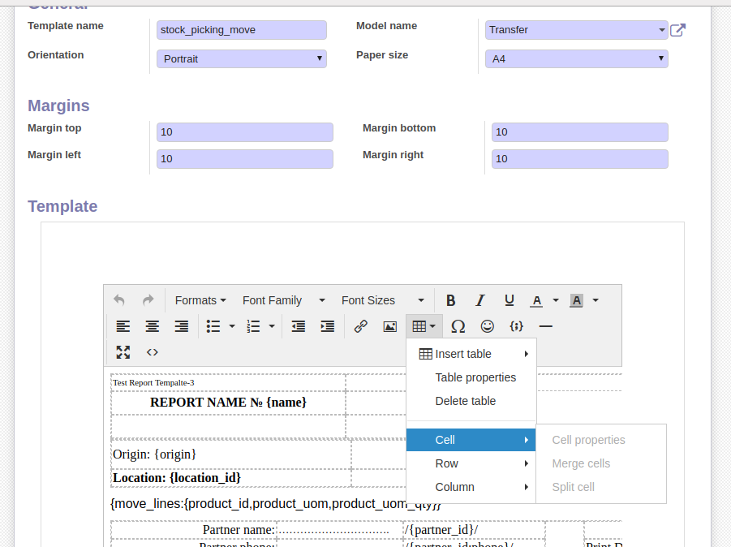
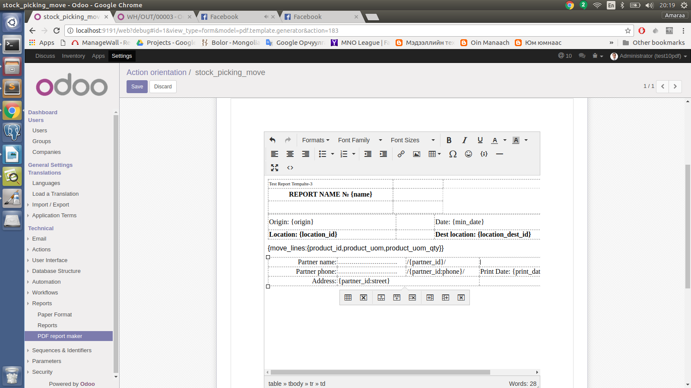
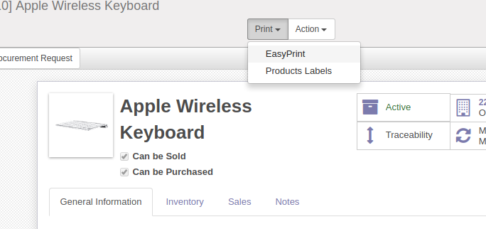
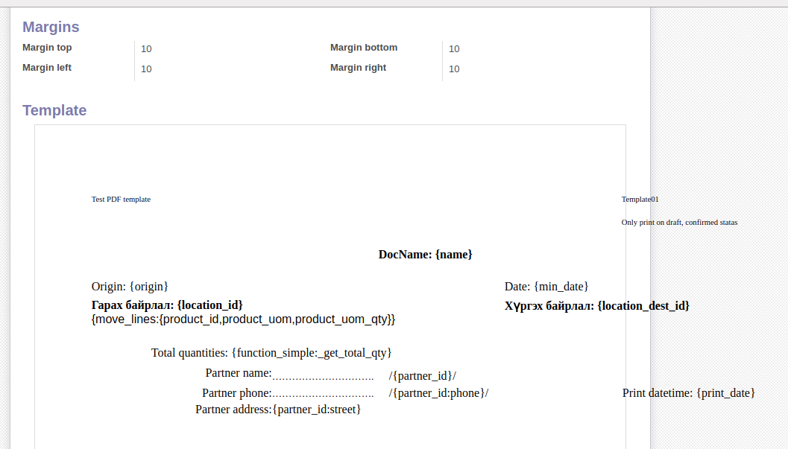
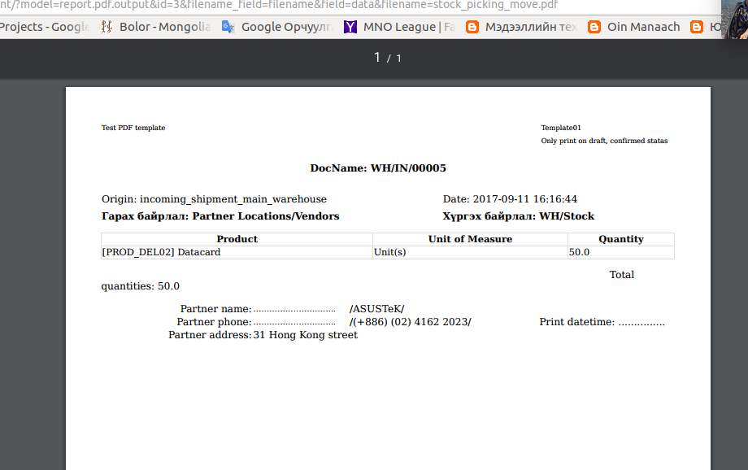

<section class="oe_container">
    <div class="oe_row oe_spaced">
        <h2 class="oe_slogan" style="color:#875A7B;">Easy PDF report creator module</h2>
        <div>
            <p><font size="3">This module allows us to create whatever model report you want that transmitting PDF report using few codes and much easy way. Now we will work on ODOO v9 and v10. While working these versions we will find out the following advantages.</font></p>
        </div>
        <div>
            Advantages:
            <ul>
              <li>No need of high knowledge of development (very few .PY codes will be written, but not to draw any model at .XML).</li>
              <li>Easy to prepare report model. Work on HTML rich text editor (likely MS word)</li>
              <li>Allows to create any model and report adjustment on any chosen model</li>
              <li>All models shall be added default menu 'EasyPrint' on Sidebar menu. You only need to draw your template designs.</li>
              <li>It shows a drawing on the model in any size</li>
              <li>It gives a chance to merge, split, resize the Table</li>
              <li>Create PDF in a short time and any desired model</li>
            </ul>
            <br/>
            It is described below using a example on  stock.picking model.
        </div>

        <h3 class="oe_slogan" style="color:#000000;"><b>Instructions</b></h3>
        <div>
            <p><font size="3">After installing Module ODOO to be loaded on Developer mode then  Setting->Reports->Easy PDF creator menu appears on the screen. Here we should identify the report model. 
The screen displays the followings and most important 2 fields are described as below:</font></p>
        </div>
        <div class="oe_demo oe_picture oe_screenshot">
            
        </div>
        <br/><br/>
        <div>
            Field description: 
            <ul>
              <li>Template name - Must be unique. This name will be used to find an adjusted report on the module.</li>
              <li>Model name - It describes report model where it adjusted. </li>
            </ul>
        </div>

        <h4 class="oe_slogan" style="color:#000000;"><u>Create a model </u></h4>
        <div>
            Advantages:
        </div>
        <div class="oe_demo oe_picture oe_screenshot">
            
        </div>
        <br/><br/>
        <div>
            It is very easy to prepare and adjust a model. Because we use HTML rich text editor. It is the same of  MS word. There are two types: Constant text and variable (field's value)
            <ul>
              <li>Constant text should be written directly.</li>
              <li>Any types of field's value located on the model will be adjusted as below (syntax) </li>
            </ul>
        </div>
        <div>
            Variables syntax:
            <ul>
              <li><u>Integer, Char, Float, Text, Date fields:</u> These fields name will be written {} in brackets.<br/> Syntax: <i>{field_1}, {field_2}</i> etc. <br/>EG: {name}, {origin}</li>
              <li><u>Many2one field:</u> {} will be written in the brackets. As well as we can approach model field of Many2one field. So that : colon will be written too. <br/>Syntax: <i>{many2one_field}, {many2one_field:field_1}</i> . <br/>Example: {partner_id}, {partner_id:phone}, {partner_id:street}</li>
              <li><u>One2many field:</u> It will be written as below. <br/>Syntax: <i>{one2many_field:{field1,field2,field3}}</i> <br/>Example: <b>product name, quantity, unit, price unit</b> of  move_lines of Stock.picking model are adjusted to be printed out. <br/> 
{move_lines:{product_id,product_uom,product_uom_qty,price_unit}}</li>
              <li><u>Call function:</u> It allows us to print out transmitted value using call function from the model.  Function return value must be the types of: <b>text, int, float.</b> <br/>Syntax: <i>{function_simple:your_function_name}</i> . <br/>Example: {function_simple:_get_total_qty}
    <br/>Function example:
                <br/><i>@api.multi
    <br/>def _get_total_qty(self, ids):
        <br/>&#09;obj = self.env['stock.picking'].browse(ids)
        <br/>&#09;tot = sum(obj.move_lines.mapped('product_uom_qty'))
        <br/>&#09;return str(round(tot,3))</i><br/>
                <div>
                Table can be created using returned value on template mode. So that the called function must be return the data using the following format.<br/>
                FORMAT: <i>data = {'header':['col1','col2'],'data':[[112323,435345.5],[23.4,56],[234,345]]}</i><br/>
Table header values should be described herein. Here are 2 column and 3 raw data. <br/>
Syntax: <i>{function:function_name}.</i> <br/>EG: {function:_get_custom_data}</div>
                </li>
              <li><u>Binary and image field:</u> Binary or Image field will be displayed without any size. <br/>Syntax: {image_field:field_name} . <br/>EG: {image_field:image_medium}
    <div>- It allows to display the drawing with the measured sizes. </div> <br/>Syntax:    <i>{image_field:field_name:width:height}.</i> <br/>EG: {image_field:image_medium:128:128}</li>
              <li><u>Drawing to be displayed indicating via URL:</u> In order to display several drawings on the template mode, firstly, URLs to be showed up on Text field should be set using the following format.  
<br/>Format:<br/>  <i>[img.test.com/uploads/20160827/c8ad95ad0e7075.png,img.test.com/uploads/order_note/20170829/7d8df4bd453dc2fc10c.jpg]</i><br/>
    After that the text field should be indicated on the template mode.<br/>  
    Syntax: <i>{image_field_urls:field_name}</i><br/>
    EG: {image_field_urls:pic_urls}</li>
            </ul>
        </div>

        <h4 class="oe_slogan" style="color:#000000;"><u>Default Menu</u></h4>
        <div>
            When connecting EasyPrint button of Sidebar menu of all model with default template, it's easy to set template name as 'Default'.
        </div>
        <div class="oe_demo oe_picture oe_screenshot">
            
        </div>

        <h4 class="oe_slogan" style="color:#000000;"><u>Appearance</u></h4>
        <div>
            Raw pdf template:
        </div>
        <div class="oe_demo oe_picture oe_screenshot">
            
        </div>
        <br/><br/>
        <div>
            After printing:
        </div>
        <div class="oe_demo oe_picture oe_screenshot">
            
        </div>
        <br/><br/>

        <h4 class="oe_slogan" style="color:#000000;"><u>Connect prepared template and code</u></h4>
        <div>
            There are two steps in order to use the prepared model. 
            <ul>
              <li>PRINT button should be added to XML view. It calls the print function.</li>
              <li>python function should be written on the model where prepared</li>
            </ul>
            Detailed description in UserGuide folder (word file)
        </div>
        <!--  -->
    </div>
</section>
